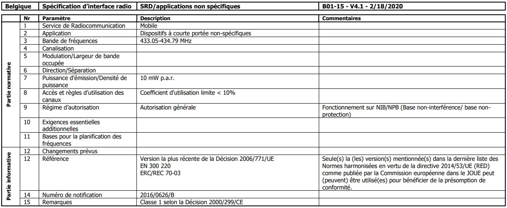

The main goal was to monitor plant pots, detect when the soil moisture was too low, and alert in some way that the plants needed watering. Several challenges had to be addressed. Since it's for a nursery, the data needs to be transmitted over a considerable distance. I also wanted to have current temperature and sunlight data for the plants.
To achieve this, I ordered two ESP32 dev boards for testing, a DS18B20 sensor for measuring environmental temperature, a soil moisture sensor , and a KY-018 sensor for measuring light intensity.
To transmit data over a long distance, I decided to test a LoRa module, specifically the Ra-01 LoRa SX1278 which operates on the 433 MHz frequency.
Be sure to check whether these frequencies can be used in your country. In my case, it's fine, but you should verify on the relevant website or regulatory body of your country, such as ibpt for belgium. For us, it's considered a non-specific Short-Range Device (SRD). We won't exceed 10 watts of power, and we will use less than 10% of the overall channel utilization, especially since this is for just one plant.
Let’s start by explaining how the network works: A device with an ESP32 and three sensors runs Arduino code. It collects data from the sensors and sends it via LoRa to a LoRa gateway. The gateway acts as a bridge between the LoRa network and the local network, where a Home Assistant is connected. Home Assistant manages an MQTT service, which processes the information and presents it as if it were a native sensor within Home Assistant.

The "sensor box" consists of three sensors: a KY-018 for light, a soil moisture sensor, and a DS18B20 for temperature. All sensors are connected to the main component, an ESP32 dev board. Data is transmitted using a LoRa Ra-01 SX1278 module.
The electrical schematic : For the DS18B20 sensor, you need to add a 4.7kΩ pull-up resistor between the yellow data wire (DQ) and the 3.3V positive power.
You can access the code [here] if you're interested. This code was for testing purposes and it might be not very clean. Basically, it takes a measurement from each sensor every 10 seconds, calculates the average of 10 readings for each sensor, and then sends the average data of each individual sensor via LoRa
The gateway simply connects to Wi-Fi and acts as a bridge between what it receives via LoRa and the local network. It receives the data in a defined format from LoRa, constructs an MQTT request, and then sends it to the server.
The electrical schematic :

You can access the code [here] if you're interested. Again this code was for testing purposes and it might be not very clean.
It works very well, but unfortunately, if someone knew what we were doing with LoRa, they could simply send requests, and my gateway would process that data. This is why the service is currently down at my place. Since then, I have been looking for a way to authenticate my sensors and gateway. LoRa can only send a string of up to 128 characters and cannot handle more than that. So, a simple solution would be to hard-code a key into the code. Before sending data, the sensor box would encrypt the message. Then, when the gateway receives any message, it would pass it through a decrypt function. If the first word decoded is "bonjour" for exemple, then the entire decoded message is considered valid for processing.
So, if others are listening, they would only see the messages encrypted with AES-128 and wouldn’t be able to send messages that the gateway would accept, as they don’t know the key.
However, this is not entirely secure. If someone intercepts a large number of encrypted messages and knows what is being sent, they could potentially reverse-engineer the AES-128 encryption and find the key, compromising all security. An attacker could then send malicious code to the gateway. However, this is still unlikely because they would have to do this within the 128-bit limit imposed by LoRa.
The very first prototype of this nursery monitor relied on LoRa because the data rate looked perfect on paper: a handful of bytes once in a while and kilometres of range on a coin cell. Reality, however, kicked back hard. The local regulations restrict 433 MHz transmissions to tiny output power and a microscopic duty‑cycle. Adding a decent antenna to each flowerpot felt absurd, and indoor attenuation through humid soil, shelves and greenhouse glass cut the range to a few tens of metres anyway. Worse than the physics was the trust issue: LoRa in its raw, point‑to‑point form has no native authentication. Any device that could mimic our packet format could inject bogus values and the gateway would obediently relay them to Home Assistant. Encrypting the payload helped a little, but key management quickly became a nightmare and message length ceilings left no room for rolling nonces or signatures.
After a few weeks of patch‑work, I pressed pause and took a step back. What I actually needed was not ultra‑long reach but reliable coverage inside a metal‑rich, plant‑dense environment that stretches over maybe fifty metres end‑to‑end. The perfect fit was already lurking in the toolbox: Zigbee 3.0. It operates in the global 2.4 GHz ISM band so there is no paperwork, yet still sips power aggressively enough to let a pair of AA batteries last several growing seasons. Most importantly, Zigbee ships with AES‑128 encryption, integrity protection, a frame counter to defeat replay attacks, key transport secured by install codes, and a fully‑fledged mesh that can reroute traffic around obstacles without a second of downtime.
Converting the LoRa beacon into a Zigbee end‑device required only a new radio module and a firmware port: the ESP32 microcontroller already had a hardware 802.15.4 block waiting to be used. Each sensor packet is now wrapped automatically by the Zigbee stack; the network layer handles retries, the security layer injects its own message integrity code, and the application layer delivers the values directly into a topic that Home Assistant understands. The result is invisible magic: if a wheelbarrow parks in the middle of the aisle and blocks the line‑of‑sight, the packet simply hops through the nearest mains‑powered plug acting as a router. If a neighbor tries to spoof a frame, the gateway discards it instantly because the counter or the MIC does not match. Meanwhile battery life improved because the radio wakes up for a fraction of the time it did under LoRa’s slow chirps.
In short, Zigbee replaces a fragile, manually‑secured star topology with a self‑healing, authenticated mesh. Every layer of the problem statement is addressed:
The greenhouse is now dotted with unobtrusive beacons that wake up, take a breath of data, and fall back asleep. The gardener’s phone receives a friendly ping only when a pot is thirsty, while the underlying network quietly repairs itself whenever a node goes offline for battery replacement or a metal door slams shut. That resilience, born from Zigbee’s mesh roots, is something LoRa simply could not give without an elaborate gateway fleet far beyond the scope of this hobby experiment.